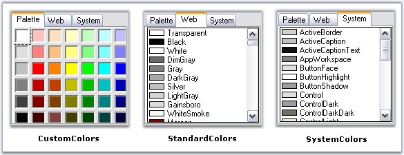
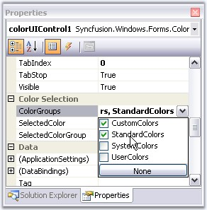
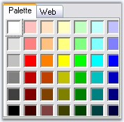
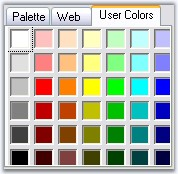
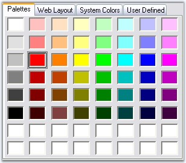

The following topics will help you become more familiar in using the ColorUI control.
ColorUI control has three in-built color groups which are CustomColors, StandardColor, and SystemColors. This section gives you an idea of the color groups available.

Figure 291: In-Built Color Groups
Displaying the Color Groups
We can control the display of the color groups using ColorGroups property.

Figure 292: ColorGroups Property
|
[C#]
this.colorUIControl1.ColorGroups = ((Syncfusion.Windows.Forms.ColorUIGroups)((Syncfusion.Windows.Forms.ColorUIGroups.CustomColors | Syncfusion.Windows.Forms.ColorUIGroups.StandardColors))); |
|
[VB.NET]
Me.colorUIControl1.ColorGroups = DirectCast(((Syncfusion.Windows.Forms.ColorUIGroups.CustomColors Or Syncfusion.Windows.Forms.ColorUIGroups.StandardColors)), Syncfusion.Windows.Forms.ColorUIGroups) |

Figure 293: Color Groups = "CustomColors" and "StandardColor Groups"
User Groups
ColorGroups property also let you add user groups in addition to the standard groups. The color palette for the UserGroups will be CustomColors, by default.
|
[C#]
this.colorUIControl1.ColorGroups = ((Syncfusion.Windows.Forms.ColorUIGroups)(((Syncfusion.Windows.Forms.ColorUIGroups.CustomColors | Syncfusion.Windows.Forms.ColorUIGroups.StandardColors)| Syncfusion.Windows.Forms.ColorUIGroups.UserColors))); |
|
[VB.NET]
Me.colorUIControl1.ColorGroups = DirectCast((((Syncfusion.Windows.Forms.ColorUIGroups.CustomColors Or Syncfusion.Windows.Forms.ColorUIGroups.StandardColors) Or Syncfusion.Windows.Forms.ColorUIGroups.UserColors)), Syncfusion.Windows.Forms.ColorUIGroups) |

Figure 294: User Group added to ColorUIControl
 Note: We can add custom text for the tabs of
the Color groups. See Tab Text for details.
Note: We can add custom text for the tabs of
the Color groups. See Tab Text for details.
Note: The Custom Color Panels and User Color
Panels can be stretched according to the size of the control. Refer
ColorUIControl Appearance for details.
See Also
The default tab text of the ColorGroups can be set using the below properties.
|
ColorUIControl Properties |
Description |
|
CustomTabName |
Set the text displayed on the custom colors tab. The tab name can be reset using ResetCustomTabName() method. |
|
StandardTabName |
Set the text displayed on the Standard colors tab. The tab name can be reset using ResetStandardTabName() method. |
|
SystemTabName |
Set the text displayed on the System colors tab. The tab name can be reset using ResetSystemTabName() method. |
|
UserTabName |
Set the text displayed on the User colors tab. The tab name can be reset using ResetUserTabName() method. |
|
[C#]
this.colorUIControl1.StandardTabName = "Web Layout"; this.colorUIControl1.SystemTabName = "System Colors"; this.colorUIControl1.UserTabName = "User Defined"; this.colorUIControl1.CustomTabName = "Palettes"; |
|
[VB.NET]
Me.colorUIControl1.StandardTabName = "Web Layout" Me.colorUIControl1.SystemTabName = "System Colors" Me.colorUIControl1.UserTabName = "User Defined" Me.colorUIControl1.CustomTabName = "Palettes" |

Figure 295: Custom Text for Color Group Tabs
Note: We can also change the font style of
the tab text using ColorUIControl.Font property.